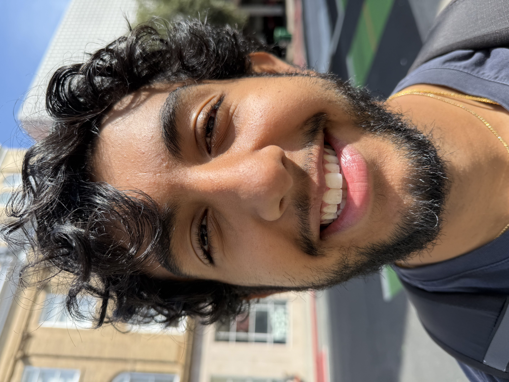
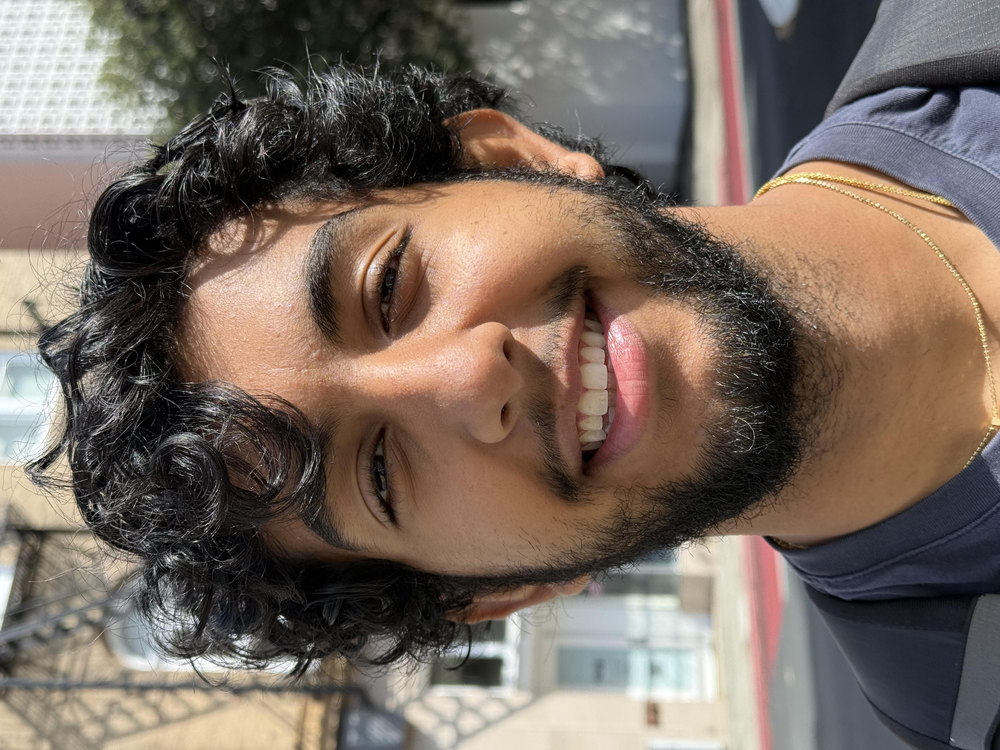
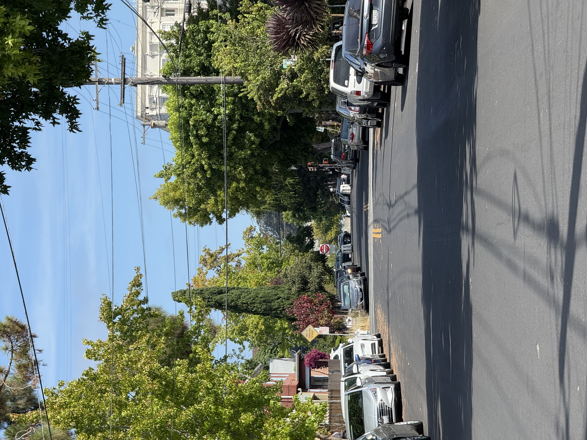

← Back to Main
Part 1: Selfie — The Wrong Way vs. The Right Way

24mm, closer distance

48mm, further distance
Part 2: Architectural Perspective Compression
24mm, closer distance

48mm, further distance
Part 3: The Dolly Zoom